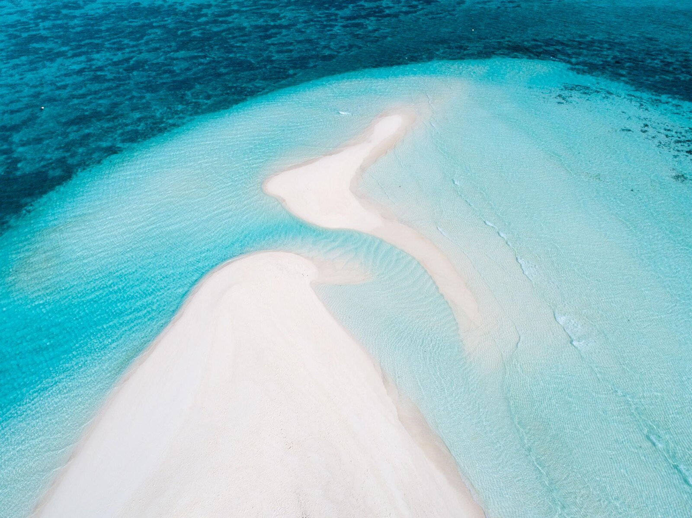
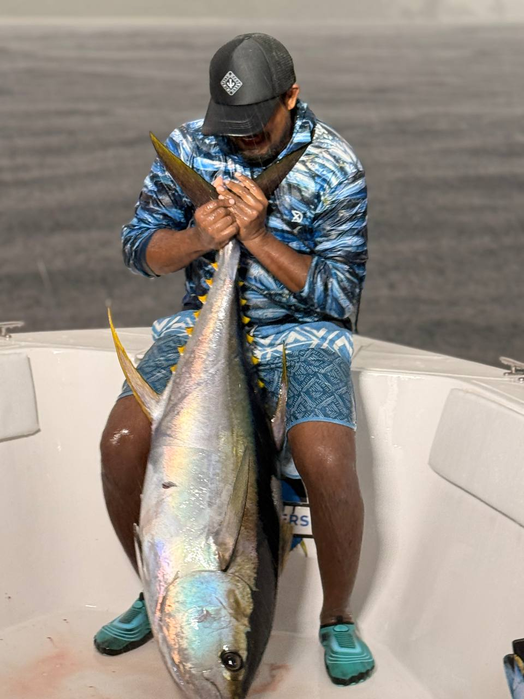
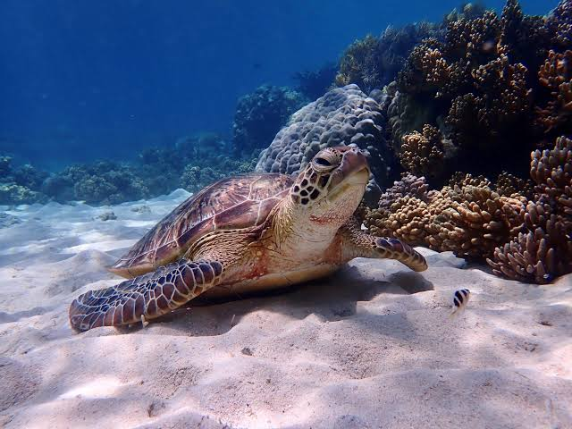
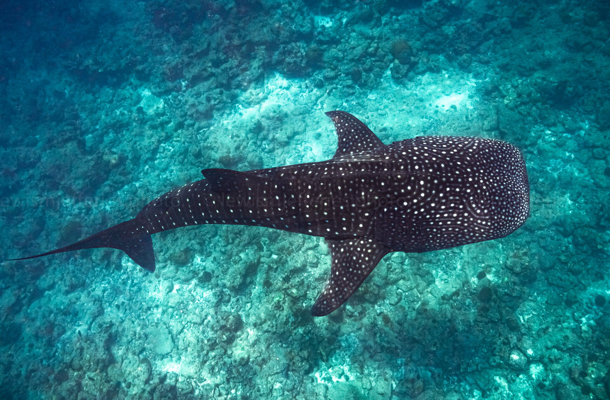
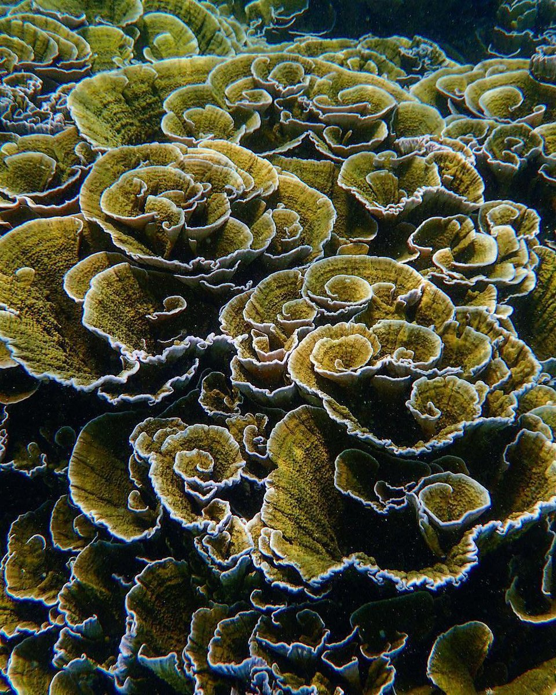
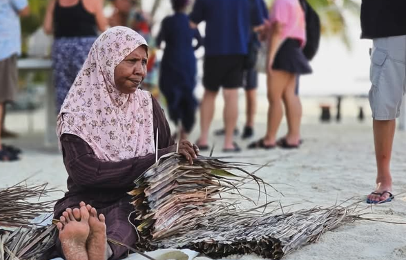

Lagoon experience
Sandbank Escape
Relax on a white-sand sandbank surrounded by crystal-clear lagoon water.
Experiences and adventures shaped by island life, local knowledge and the extraordinary marine environment of the Baa Atoll UNESCO Biosphere Reserve.
Explore experiences →Dharavandhoo is a small island surrounded by coral reefs, clear lagoons and rich marine life. It is Muraka Farm’s home and the place where our restoration work, community relationships and knowledge of the reef come together.
Visitors can experience the island above and below the water—from nearby sandbanks and turtle reefs to open-ocean fishing, Hanifaru Bay and everyday island culture.
Explore the waters, reefs and community around Dharavandhoo through experiences grounded in the character of the island.

Relax on a white-sand sandbank surrounded by crystal-clear lagoon water.

Head beyond the reef for an unforgettable fishing experience in the open waters around Dharavandhoo, guided by local knowledge and island traditions.

Snorkel above vibrant reefs and look for sea turtles in warm, clear water.

Discover Hanifaru Bay, where majestic manta rays gather in crystal-clear waters, creating one of the Maldives’ most extraordinary marine experiences.

Explore vibrant coral reefs and local restoration sites that support marine life and strengthen the community.

Meet locals, learn island traditions, and enjoy a slower, more authentic island rhythm.
Get in touch to discuss conservation learning, restoration visits and suitable ways to connect with our work while you are on the island.